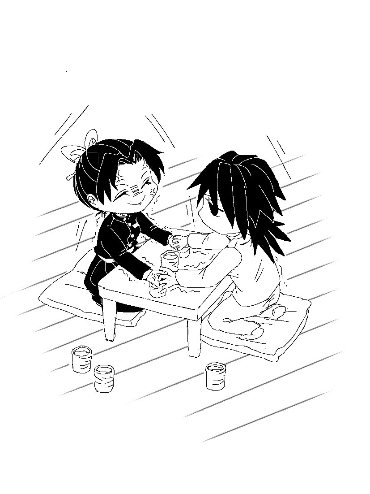

《稱呼》
經過昨天的一番洗禮，挑戰者仍無畏無懼的前來報到了
今天的反應訓練的旁觀人依舊是葵，她特地準備了三條毛巾疊在身後。
希望足夠應付今天的茶水量。
（富岡大人的鬥志十分旺盛，不需透過表情也能感受啊⋯⋯）
葵看著彷彿背後熊熊燃燒的富岡正襟危坐在矮桌旁。
對面一樣是蝶屋敷的最大關主（？），胡蝶忍坐鎮在富岡對面。
沒有自信十足或鬥氣爆發，忍不卑不亢的跪坐著。
「那麼，預備──開始！」
葵一聲下令，戰爭爆發。
雙方火力相當，一如前幾天的戰況。
毛巾伺候在旁隨時可以遞上。
──當然，葵是看著富岡的方向。
（──嗯？）
不知是否又是錯覺，葵感覺，忍的速度沒有前兩天快。
昨天和前天，果然是用全力在對付富岡大人吧，葵心想。
（那麼今天是⋯⋯？）
（唰！）
電光石火間，富岡的左手差一點制住忍的右手。
但忍也不是省油的燈，迅如雷電的立刻將手抽出。
只不過還不夠快，她的手背依舊擦過富岡的掌心。
剛剛的碰觸似乎打擊到忍的節奏，她臉色微微一變。
富岡一點也沒有受到影響，速度依舊維持著水平。
看準了忍的異變，他又加快了手速──
（啪！）
富岡的右手趁著忍準備攻擊的短短一秒間，瞬間壓住了她即將拿起茶杯的手。
「！！」
忍見狀馬上抄起另一隻手取杯，但同樣在碰到茶杯前就被抓住了。
「嗚⋯⋯」
富岡牢牢地握住忍的兩隻手，兩人僵持在半空中。
忍想掙脫富岡的束縛，無奈對方力氣實在太大，動彈不得。
（果然被抓住了⋯⋯）
今天忍大人狀況不如昨天啊......不過，應該不是生病或是身體不適。
而比較像故意放慢⋯⋯
富岡一副很不想被潑的樣子，用盡生命般箝制住忍的雙手。
「富岡先生⋯⋯」忍冒出了青筋，「你要握到什麼時候？」
富岡聞言一楞，直到方才完全沒意識他正在抓的是一雙妙齡少女的手。
他鬆開了雙手，卻又想到什麼似的，右手再度握住忍的左手。
「又怎麼了？」忍不悅的問道。
「⋯⋯我可以回去了吧？」富岡直勾勾盯著她，「把日輪刀還我。」
「⋯⋯知道了啦。」忍一把抽回自己的手。
葵在一旁只看得一頭霧水。
這兩人究竟是感情好還是不好......她真心不懂。
富岡站起身，他終於可以一身乾淨的離開道場了。
葵看著這畫面居然有點感動。
轉身離開的富岡，走著走到門前卻停了下來。
「⋯⋯？」
忍和葵疑惑地望著他。
「今天是刻意讓我的。」
富岡沒有回頭，面著門像在自言自語。
「是吧？忍。」
「───我是放水沒錯......是說，」忍愕然，那不是重點：「誰說你可以直接叫我名字！」
「⋯⋯因為胡蝶有兩個人⋯⋯」富岡一臉懵。
上次明明是她這樣說，所以他只好在稱呼上有所區別，為什麼現在又生氣了呢？他不理解。
「───」
忍覺得頭好痛，最後無奈決定放棄思考。
「⋯⋯隨你高興吧。」
「這段期間受你關照了。」
富岡雲淡風輕的道，隨後默默的離開了。
葵在一旁聽著兩人的對話結束。
她望著安靜收拾桌子的忍——
（耳朵紅了呢。）
今天得知了一些意料之外的訊息，葵輕輕的笑了。
